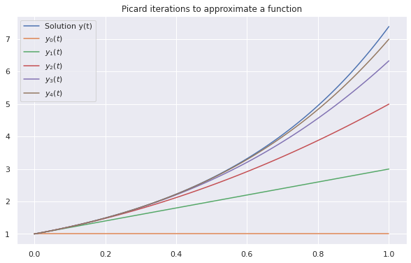

Teorema de Picard-Lindelof
Este é um belo teorema de exstência e unicidade de equações diferenciais ordinárias da forma
import numpy as np
from scipy.integrate import solve_ivp, quad
import matplotlib.pyplot as plt
import seaborn as sns
sns.set()
O teorema basicamente consiste em construir um operador da seguinte forma:
em que é um operador funcional. Note que se se para todo , teremos resolvido o problema, dado que
é uma solução para . Nesse caso, dizemos que queremos encontrar um ponto fixo do operador . Se demonstrarmos que possui um ponto fixo e ele é único em algum intevalo suficientemente pequeno, então teremos demonstrado nosso teorema.
Um teorema de existência (e unicidade local também) é o Teorema de Banach. Para isso, bastaria mostrar que leva funções de um espaço no mesmo espaço e que é uma contração, isto é, intuitivamente, se a cada vez que aplicamos , as funções se aproximam e continuam no mesmo espaço, então vai existir um ponto fixo para ele.
Nossa ideia aqui não é demonstrar o Teorema, mas sim mostrar a interação de Picard que é escrita da seguinte forma:
O teorema de ponto fixo de Banach nos mostra que converge para a solução para todo ponto em uma vizinhança de 0.
Usaremos a função de quadratura para integrar a função .
a = (1,2)
(1,*a)
(1, 1, 2)
def picard_iteration(fun, t_eval, y0, yk, args):
pieces = [quad(func = fun,
a = t_eval[i],
b = t_eval[i+1],
args = ((yk[i] + yk[i+1])/2, *args)
)[0] for i in range(len(t_eval)-1)]
pieces.insert(0,0)
yk = np.cumsum(np.array(pieces)) + y0
return yk
Considere o problema
# defining the function
f = lambda t, y, a: a*y
a = 2
# time of definition
upper = 1
n = 100
t = np.linspace(0,upper,n)
Esta é a solução usando Runge-Kutta.
solution = solve_ivp(fun = f,
t_span = (0, upper),
t_eval = t,
y0 = (1,),
method = 'RK45',
args = (a,))
Aqui nós apresentamos as primeiras iterações de Picard.
y0 = np.ones(n)
y1 = picard_iteration(fun = f, t_eval = t, y0 = (1,), yk = y0, args = (a,))
y2 = picard_iteration(fun = f, t_eval = t, y0 = (1,), yk = y1, args = (a,))
y3 = picard_iteration(fun = f, t_eval = t, y0 = (1,), yk = y2, args = (a,))
y4 = picard_iteration(fun = f, t_eval = t, y0 = (1,), yk = y3, args = (a,))
plt.figure(figsize = (10,6))
plt.title('Picard iterations to approximate a function')
plt.plot(solution.t, solution.y[0], label = 'Solution y(t)')
plt.plot(solution.t, y0, label = r'$y_0(t)$')
plt.plot(solution.t, y1, label = r'$y_1(t)$')
plt.plot(solution.t, y2, label = r'$y_2(t)$')
plt.plot(solution.t, y3, label = r'$y_3(t)$')
plt.plot(solution.t, y4, label = r'$y_4(t)$')
plt.legend()
plt.show()
